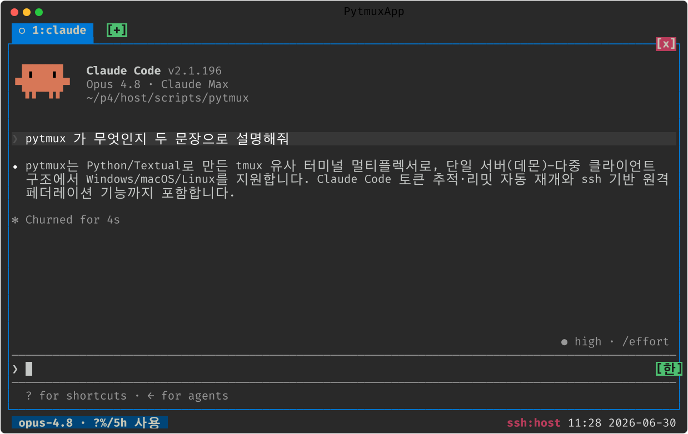
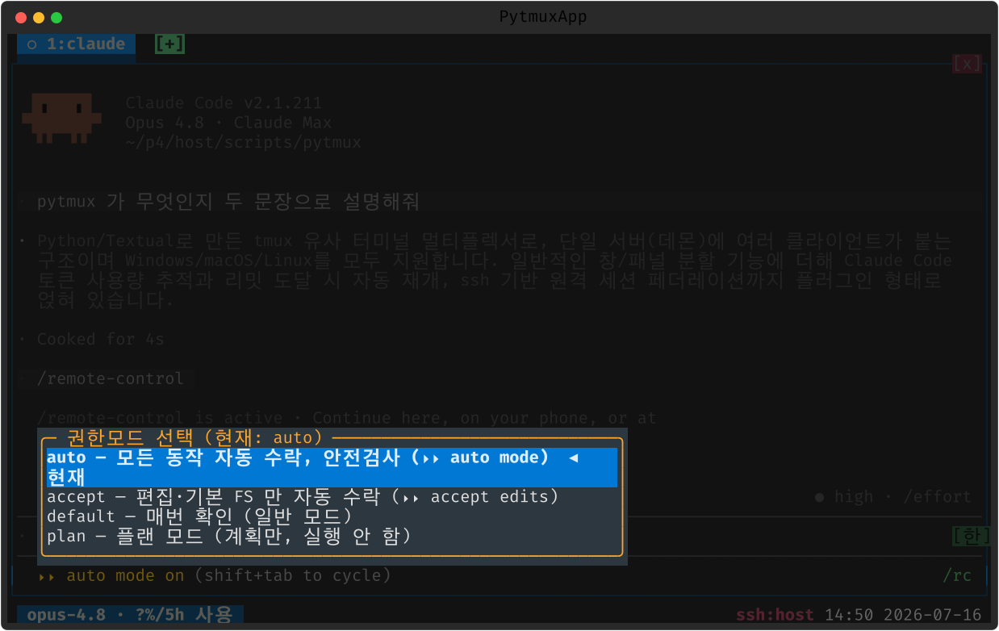
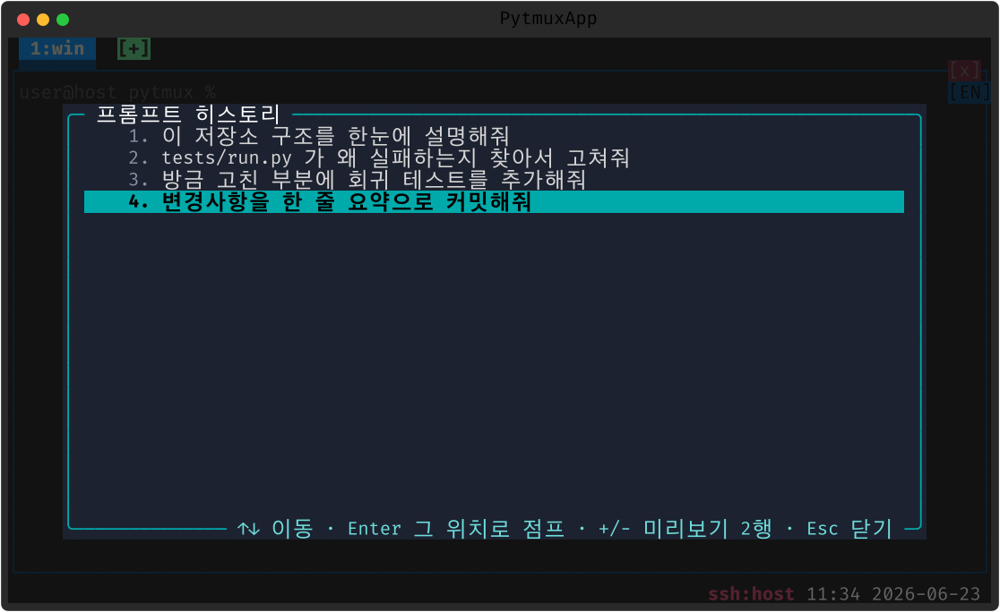

Claude Code 연동
패널에서 claude CLI 를 돌리면 pytmux 가 상태·토큰·한도를 추적하고, 리밋에 걸리면
자동으로 잇습니다. 이 모든 기능은 claude-code 플러그인이며, 디렉토리를 지우면 조용히
사라집니다.
상태 아이콘과 알림
실행 중인 탭에 상태 아이콘을 표시합니다 — 대기 ○ · 처리중 ◐ · 리밋 멈춤 ⊘. 비활성 탭의 작업이 끝나면 탭 배경색으로 알립니다. 상태줄에는 모델 배지·토큰 배지 등 클릭 가능한 배지가 붙습니다.

claude 가 실행 중인 패널.한도에 걸렸을 때 · 전송 오류가 났을 때
사용량 한도(5시간 창 등)에 걸려 멈춘 세션은 이제 Claude Code 가 스스로 이어 갑니다.
Claude Code 2.1.234 부터 한도가 풀리면 열린 세션에서 작업을 자동으로 계속하며, 기다리는 동안 화면 아래에
Usage limit reached · continuing automatically at 3:45pm · esc to cancel 같은 줄이 보입니다.
기본으로 켜져 있고, /config 의 「Continue automatically at usage limit」
("autoContinueAtUsageLimit")로 끄고 켭니다.
그래서 pytmux 가 해제 시각을 읽어 continue 를 대신 치던 예전 자동 재개(prefix R·상태줄 AR)는 없앴습니다 —
둘이 함께 있으면 pytmux 가 친 글이 Claude Code 의 대기를 끊어 버립니다.
/rate-limit-options 를 열어
「Wait here, then continue automatically」를 고르면 같은 대기가 걸립니다.
전송 오류(API 오류·과부하·응답 없음)는 사정이 다릅니다. Claude Code 는 몇 번 재시도한 뒤 대화형 턴을
끝내고 continue 를 기다리므로, pytmux 의 auto-retry(기본 on)가 "계속" 을 넣어
이어 갑니다 — 1분 → 2분 → 이후 5분 간격으로, 풀릴 때까지 반복합니다. Claude 가 스스로 재시도하는 중에는 기다립니다.
권한 모드 · 모델 · 시작 규칙
패널의 권한모드 footer 를 클릭하면 auto / accept / default / plan 선택 팝업이
열립니다(권한 우회로 띄운 세션에만 bypass 가 목록 끝에 붙습니다).
모델 배지 를 클릭하면 모델·컨텍스트를 바꾸는 팝업이 열립니다(내부적으로 /model
주입). 새 세션을 처음부터 auto 모드로 여는 일은 이제 Claude Code 가 스스로 합니다 —
대화형 세션은 권한모드 설정이 없으면 auto 로 시작하고(Claude Code 2.1.284), 고정하려면
~/.claude/settings.json 에 "permissions": {"defaultMode": "auto"} 를 적습니다.
그래서 예전 claude-auto-mode(idle 마다 auto 로 돌리기)는 없앴습니다.
시작 규칙(새 세션이나 /clear 뒤에 늘 넣던 글)은 이제 Claude Code 의
SessionStart 훅에 둡니다. 훅이 출력한 글은 프롬프트가 아니라 컨텍스트로 들어가서
턴을 따로 시작하지 않습니다. 늘 지킬 규칙이라면 CLAUDE.md 가 제자리입니다.
그래서 예전 claude-rules 는 없앴습니다. 거기 적어 둔 글은 서버가 처음 뜰 때 상태 디렉터리의
<소켓>.claude-rules.retired.txt 에 한 번 보존되니, 그 글을 아래 훅으로 옮기면 됩니다.
// ~/.claude/settings.json
{
"hooks": {
"SessionStart": [
{ "matcher": "startup|clear",
"hooks": [{ "type": "command", "command": "cat ~/.claude/start-rules.md" }] }
]
}
}
원격 제어를 세션마다 켜 두려면 Claude Code 의 /config 에서
「Enable Remote Control for all sessions」를 켜거나 "remoteControlAtStartup": true 를 적습니다.
예전에 새 세션마다 /rc 를 대신 치던 auto-launch 는 그래서 없앴습니다.
진행을 막는 화면은 자동으로 넘깁니다. 조직이 관리 설정을 걸어 둔 계정에서 Claude 가 시작하자마자 멈춰 서는
Managed settings require approval 화면은 이미 선택돼 있는
1. Yes, I trust these settings 를 Enter 로 확정해 통과시킵니다.
화면 하나당 딱 한 번만 키를 보내고, 선택을 옮기는 키는 보내지 않습니다 —
화살표가 다른 항목에 놓여 있거나 문구가 바뀐 화면이면 아무 키도 치지 않고 그대로 사람에게 남깁니다.

프롬프트 히스토리
보낸 프롬프트 이력을 미리보기·검색·점프합니다(claude-prompt-history 플러그인,
prompt-history·별칭 ph). 명령 프롬프트에서 입력하는 동안 직전 프롬프트를
미리 보여 주고, 미리보기 줄 수는 prompt-history-lines(1–3)로 조정합니다.

화면 안정성 (CJK 모호폭 · 깨짐 완화)
Claude Code 처럼 부분 갱신이 많은 TUI 는 단말마다 다른 모호폭(ambiguous-width)
처리 때문에 한글·기호가 겹쳐 보일 수 있습니다. pytmux 는 시작 시 폭을 자동 감지하고, 런타임에
:set ambiguous-width narrow|wide|auto 로 폭 모델을 일관되게 전환합니다.
드물게 출력이 어긋나면 claude-auto-redraw(off|idle|corruption, 기본 off)로
완료(busy→idle)마다 또는 깨짐 감지 시 패널을 한 번 전체 재출력해 자동 복원하게 켤 수 있습니다.
수동으로는 prefix r(redraw)로 언제든 다시 그립니다.
세션 이름 통일 · 세션 재개 · 피드백 문구
- 이름 통일 —
namesync(claude-name-sync플러그인)로 특정 디렉토리에서 Claude 를 돌리면 탭·패널·Claude 세션 이름을 키워드로 한 번 자동 통일합니다. 한 번 맞춘 뒤에는 그 탭·패널·Claude 세션인 한 다시 건드리지 않아, 그 뒤 손수 지은 이름이 그대로 유지됩니다(새 셸을 띄우면 다시 한 번 통일). - 세션 재개 —
claude-resume(별칭cr)로 이 머신의 Claude 세션 목록을 보고 Enter 로 새 탭에서 재개합니다. - 피드백 문구 — Claude 의 시작 팁(
Use /feedback …)과 세션 평가 배너는 이제 Claude Code 설정으로 끕니다.~/.claude/settings.json에"spinnerTipsEnabled": false(팁 전체)와"feedbackSurveyRate": 0(평가 배너)을 적으면 됩니다. 예전에 이 문구를 화면에서 가리던claude-disable-feedback플러그인은 그래서 없앴습니다. - 세션당 클리어 —
prompt-clear로 매 완료마다 문서화 후/clear하는 모드를 켤 수 있습니다.